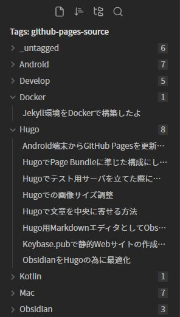
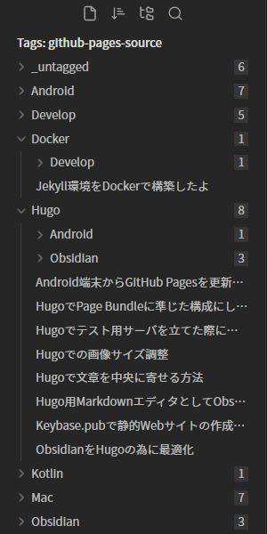

SE辞めた/Kotlin/Python/Hugo/Obsidian
好きなもの: OSS、個人サイト、クロスプラットフォーム
嫌いなもの: サブスク、いかがでしたかブログ、ビッグテックの囲い込み
生息地: mastodon

Hugo用の記事(Markdown)をObsidianで書くにあたって、プラグインを入れたり設定を弄ったりしたのでメモしておきます
と言ってもあんまり大したことはやっていないのですが
Obsidianってデフォルトの日本語フォントが汚いんですよね・・・うちの環境だけか？？
Windows内蔵フォントも微妙だったのでGoogle Fontsからブログのテーマで使用しているものと同じフォントを引っ張ってきて導入しました
やり方としては、フォントをWindowsにインストールしてからObsidianを再起動させて、設定からフォントを選択するだけです
Obsidianではマークダウンのファイルに対してCSSを適用することが出来ます
縦長の画像が見切れてウザったいのでCSSファイルを適当に作って縮小させました
img {
width: 100%;
max-height: 500px;
object-fit: contain;
}
marginをautoにしても画像を中央配置に出来なくてあれ～っと思ったのですが、上記のコードにしたら解決しました
シンプルイズベストだと思っているのでCSSはこれだけにしています
ファイルは.obsidian/snippets配下に置きます(Obsidianの設定から当該フォルダをエクスプローラで参照できます)
Obsidianの設定からプラグインを検索すればすぐ見つかるのでリンクは特に載せていません
利点は主に2つ
プラグインの設定の"Do not simplify enpty folders” をONにしないと、複数のタグが付いている場合に見づらくなってしまうので注意
設定のExpand limitを1にすると一番シンプルな表示になります

2以上にすると、複数のタグが付いている際に、更にタグ毎に分類されます

Front Matterにも色分けがされて見やすくなります
Obsidianでフォルダを開くと、直下に.obsidianフォルダが作成されます
その中に作成されたファイルには設定等が記録されます
Gitでの管理すべきかちょっと悩んだので中身を見てみます
.obsidian
├ plugins
├ snippets
├ app.json
├ appearance.json
├ community-plugins.json
├ core-plugins-migration.json
├ core-plugins.json
├ graph.json
├ hotkeys.json
└ workspace.json
"showFrontmatter": true という表記があったので設定に関するファイルと思われる一部含めて一部含めないというのも何だか気持ち悪いような・・・
正直このあたりは保証できませんが、最悪ファイルが壊れてもGitで遡って復元すればいいだけなのであまり気にしすぎる必要は無いのかなと思います
前の記事でグラフ表示の為の小細工をしていますが、各記事のファイルに対して行う必要がある上、TagFolderを使えば十分参照しやすくなるので無理してやらなくていいかなと思います
他に何かあれば追記します
SE辞めた/Kotlin/Python/Hugo/Obsidian
好きなもの: OSS、個人サイト、クロスプラットフォーム
嫌いなもの: サブスク、いかがでしたかブログ、ビッグテックの囲い込み
生息地: mastodon